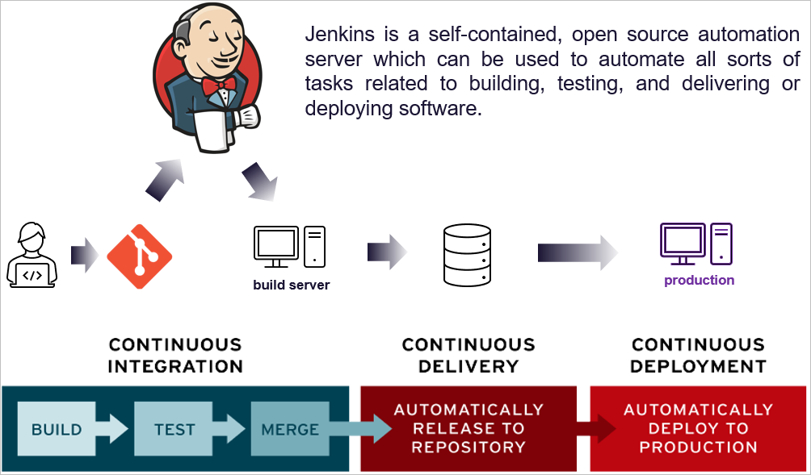
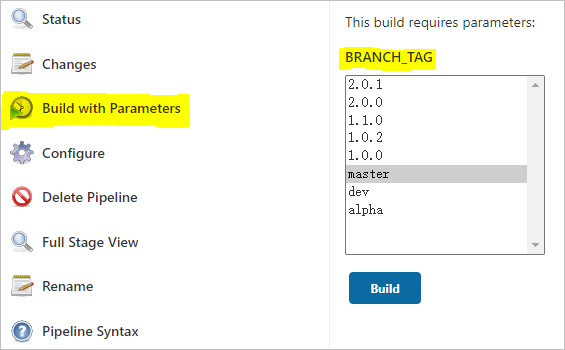
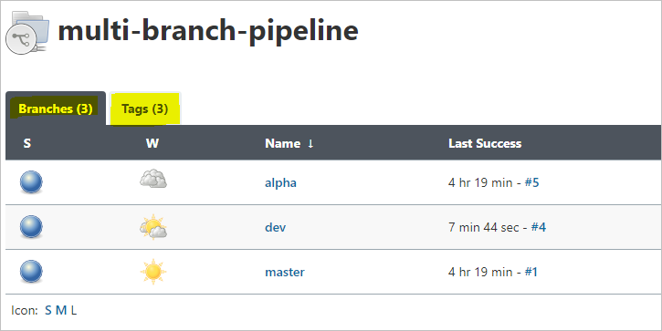

Jenkins入门：创建项目¶
发布于：2021-05-09 | 分类：devops
Jenkins是CI/CD链条中连接上游版本管理和下游构建、测试、部署的重要一环。即便版本管理与CI/CD日趋融合的今天，例如GitLab CI、GitHub Action的兴起，Jenkins以其先发优势和强大扩展性仍旧聚集了大量用户。本文在参数化构建的前提下，循序渐进地介绍使用Jenkins创建Freestyle、Pipeline及Multibranch Pipeline项目的要点。

参数化构建¶
作为入门，我们选择在Jenkins页面上手动执行/构建/build项目；一个仓库通常包含多个分支，那么能否在同一个项目中根据需要选择性构建某个分支呢？这就是参数化构建，在开始构建之前指定某个参数。设置方式：
General -> This project is parameterized
这里我们关心的参数是分支名称。数据来源形式有很多，例如手动指定默认的选项（master, alpha, beta等），但更好的方式是直接从仓库中读取。这就需要Git Parameter插件的支持。安装插件后，在项目配置页开启参数化构建，选择Git Parameter，并配置如下具体内容（仅列出关键项）：
-
Name参数名称，本文以BRANCH_TAG为例，则后续其他地方可以引用${BRANCH_TAG} -
Parameter Type选择Branch or Tag表示同时关心分支名和标签 -
Default Value默认分支名，例如master -
Branch Filter填写origin/(.*)，完整的分支名通常是origin/xxx，因此需要提取出名字本身xxx
这一步设置的效果是Jenkins UI上的构建按钮从Build Now变成了Build with Parameters，即需要指定参数后才能继续；并且自动列出了仓库中的所有分支和标签。

Freestyle项目¶
最基础、灵活的配置方式，可以配置以下六个方面：
-
General基本设置，如是否参数化构建、是否指定节点执行此项目。如上一节描述进行参数化构建设置，参数名
BRANCH_TAG -
Source Code Management指定源码- git仓库地址、登陆凭证、分支名称，其中分支名称使用
${BRANCH_TAG}，以便进行参数化构建 - 当然也可以为空，即不针对源码的构建
- git仓库地址、登陆凭证、分支名称，其中分支名称使用
-
Build Triggers触发自动构建的方式例如轮询仓库、仓库的Push操作等。本文手动触发，故略过。 -
Build Environment略过 -
Build构建方式例如执行shell或者batch脚本。 -
Post-build Actions构建完成后的操作例如生成报告、发送邮件等。
Freestyle项目思路清晰简单，但涉及整个构建周期的方方面面；以最大灵活度手动配置上下游，而核心构建过程由脚本完成。考虑到实际应用中Build部分涉及多个阶段，例如构建、测试、发布等，一整段脚本的方式可能不够明晰和灵活，这就引出了下面的Pipeline项目。
Pipeline项目¶
Pipeline项目将Freestyle项目中的许多手动设置方式改为配置文件Jenkinsfile，并且最大的亮点在于以分阶段的方式管理整个构建流程，故而称为Pipeline项目。需要配置的方面也从6个减为3个：
-
General同上，开启Git Parameter参数化构建。 -
Build Triggers同上，略过。 -
Advanced Project Options指定构建过程的项目显示名称，默认即为项目名。仅为显示效果，故没算做一个配置方面。 -
Pipeline指定Jenkinsfile——遵守Jenkins Pipeline语法规则的脚本。
一个明显的问题，如何指定源码仓库？如上所述，由手动指定改为由Pipeline指定。两种方式指定Pipeline：
-
Pipeline script：直接在Jenkins页面上输入Pipeline脚本，本文称作UI托管的Jenkinsfile -
Pipeline script from SCM：Pipeline脚本随源码一同管理，本文称作源码托管的Jenkinsfile
1. UI托管的Jenkinsfile¶
下面给出一个示例，基本语法参考官网文档。
-
第一步得指定源码仓库，于是有了
stage('Checkout')这个阶段。这部分脚本可借助Snippet Generator自动生成（模板：checkout: Checkout from version control）。
-
Checkout中分支名称branches必须跟随参数变化，因此需要parameters部分定义参数BRANCH_TAG。这部分脚本可借助Snippet Generator自动生成（模板：properties: Set job properties）。
-
stage('Init')部分是一个应用示例，根据BRANCH_TAG参数定义两个环境变量BRANCH和TAG，分别代表当前构建的是分支还是标签，以便后续有针对性的操作。注意
BRANCH_NAME虽然是Jenkins内置的表示分支名称的环境变量，但是仅在多分支的Pipeline项目有效。 -
stage('Build')是另一个示例，示意Windows上通过默认的cmd和git batch执行shell命令的方式- 执行节点
win_agent是Windows机器，所以用bat执行cmd命令 - 实际需要执行shell命令，所以需要
sh（Git_Home\bin\sh.exe）执行，并用-c指定执行命令的文本
- 执行节点
pipeline {
agent {label 'win_agent'}
parameters {
gitParameter name: 'BRANCH_TAG',
type: 'PT_BRANCH_TAG',
branchFilter: 'origin/(.*)',
tagFilter: '*',
defaultValue: 'master',
selectedValue: 'DEFAULT',
sortMode: 'DESCENDING_SMART',
description: 'Select branch/tag to build...'
}
stages {
stage('Checkout') {
steps {
echo 'Checkout git repo..'
checkout([$class: 'GitSCM',
branches: [[name: "${params.BRANCH_TAG}"]],
doGenerateSubmoduleConfigurations: false,
extensions: [],
submoduleCfg: [],
userRemoteConfigs: [[
credentialsId: 'bd3cxxxxxxx',
url: 'git@gitlab-url/group/name.git']]
])
}
}
stage('Init') {
steps {
script {
if (params.BRANCH_TAG =~ /^([0-9]+)\.([0-9]+)\.([0-9]+).*/) {
env.BRANCH = params.BRANCH_TAG
env.TAG = params.BRANCH_TAG
} else {
env.BRANCH = params.BRANCH_TAG
env.TAG = ""
}
}
}
}
stage('Build') {
steps {
bat "sh -c 'make build'"
}
}
stage('Test') {
steps {
bat "sh -c 'make test'"
}
}
stage('Deploy') {
steps {
bat "sh -c 'make deploy'"
}
}
}
}2. 源码托管的Jenkinsfile¶
为便于维护，通常将以上Pipeline脚本和源码放一起管理，这就对应定义Pipeline的第二种方式：从下拉框选择Pipeline script from SCM，然后指定源仓库的信息，类似于Freestyle项目指定仓库的方式：
-
仓库地址和登陆凭证
-
分支名称，配合参数化构建，输入
${BRANCH_TAG}注意
实际上这种传入参数的方式仅适用于Freestyle项目，所以此处
${BRANCH_TAG}并不会被解析为具体名称，而是原封不动作为git分支名称，导致Checkout仓库失败。一个解决方式是取消勾选最后的Lightweight checkout。 -
Pipeline脚本相对仓库根目录的路径，这是新增的部分
最终，删除上一段Jenkinsfile中stage('Checkout')部分即可直接存入仓库使用。
多分支Pipeline项目¶
借助Git Parameter的参数化构建方式还是有些繁琐，所以Jenkins直接内置了多分支Pipeline项目，配置源码仓库后，Jenkins自动为每一个带有Jenkinsfile的分支/标签创建子项目，最终形成project_name/branch_name两级项目的结构。
多分支Pipeline项目配置选项略多，作为入门配置只需考虑以下两方面：
-
Branch Sources指定分支来源-
源码仓库和登陆凭证
-
Behavious选择Discover branches和Discover tags，表示同时考虑分支和标签
-
-
Build Configuration指定Jenkinsfile在仓库中的路径
注意，我们不再使用前面的参数化构建，且BRANCH_NAME对多分支Pipeline项目生效了，故Pipeline脚本做相应的简化：
-
无需
parameters -
无需
stage('Checkout') -
直接使用
BRANCH_NAME和TAG_NAME
pipeline {
agent {label 'win_agent'}
stages {
stage('Init') {
steps {
script {
if (env.TAG_NAME == null) {
env.BRANCH = env.BRANCH_NAME
env.TAG = ""
} else {
env.BRANCH = env.TAG_NAME
env.TAG = env.TAG_NAME
}
}
}
}
stage('Build') {
steps {
bat "sh -c 'make build'"
}
}
stage('Test') {
steps {
bat "sh -c 'make test'"
}
}
stage('Deploy') {
steps {
bat "sh -c 'make deploy'"
}
}
}
}最终结果
